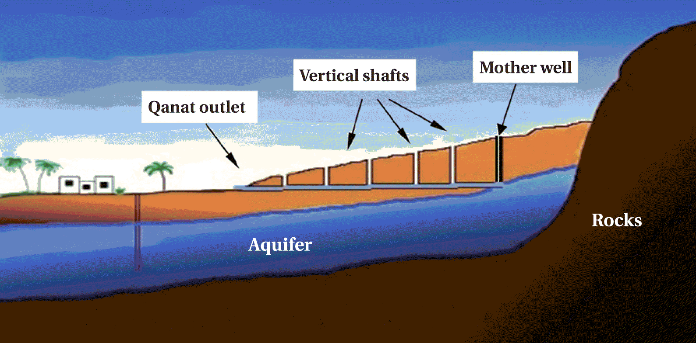
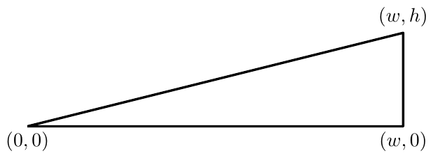

ACM-ICPC World Finals 2015 · Problem H
A qanat is an irrigation system widely used to deliver water in hot, arid climates. The technology was originally developed by Persians over 2000 years ago. In Morocco, qanats are known as khettara and are still used today in the southern part of the country.
The basic feature of a qanat is an essentially horizontal channel that brings water from an underground water source to an outlet near a civilization. There is also a shaft known as a mother well that rises vertically from the underground water source to the surface of a mountain or hill. Creating such a system is extremely expensive, and was especially so in ancient times, since all of the materials excavated from the channel and mother well must be carried above ground, either through the channel outlet or the top of the mother well. To aid in the construction, there are often one or more additional vertical shafts placed at strategic locations above the underground channel. Although these shafts must also be excavated, they provide a means for lifting additional dirt from the horizontal channel as illustrated in Figure H.1.

For this problem, model the cross-section of a qanat as shown in Figure H.2, with the channel outlet at (0, 0), the water source at (w, 0), and the top of the mother well at (w, h) with w > h. The surface of the mountain extends along a straight line from (w, h) to (0, 0).

Every qanat must have a vertical mother well from the water source to the mountain surface above, along with n additional vertical shafts. The channel and all shafts are modeled as line segments. Your goal is to determine the placement for those additional shafts so as to minimize the overall excavation cost. This cost is equal to the sum of the distances that each piece of excavated dirt must be transported to reach the surface (using any combination of horizontal and vertical movement). For example, the cost of excavating a continuous section of dirt starting from the surface and going along a path of length ℓ (possibly including turns) is ∫0ℓ x dx = ½ ℓ².
The input consists of a single line containing three integers w (1 ≤ w ≤ 10 000), h (1 ≤ h < w), and n (1 ≤ n ≤ 1 000). The value w is the horizontal distance from the water source to the qanat outlet. The value h is the vertical distance from the water source to the mountain surface. The value n is the number of vertical shafts that must be used in addition to the mother well.
First, display the minimum overall excavation cost. Next, display the x-coordinates, in increasing order, for n optimally placed vertical shafts. If n > 10, display only the first 10 x-coordinates. Answers within an absolute or relative error of 10−4 will be accepted. You may assume that there is a unique solution. No test case will result in a shaft within 0.001 units from the outlet of the qanat channel or from another shaft.
8 4 1
31.500000 3.000000
195 65 2
12220.000000 48.000000 108.000000
10000 1 1000
30141.885677 9.956721 19.913443 29.870164 39.826887 49.783610 59.740334 69.697060 79.653786 89.610515 99.567245